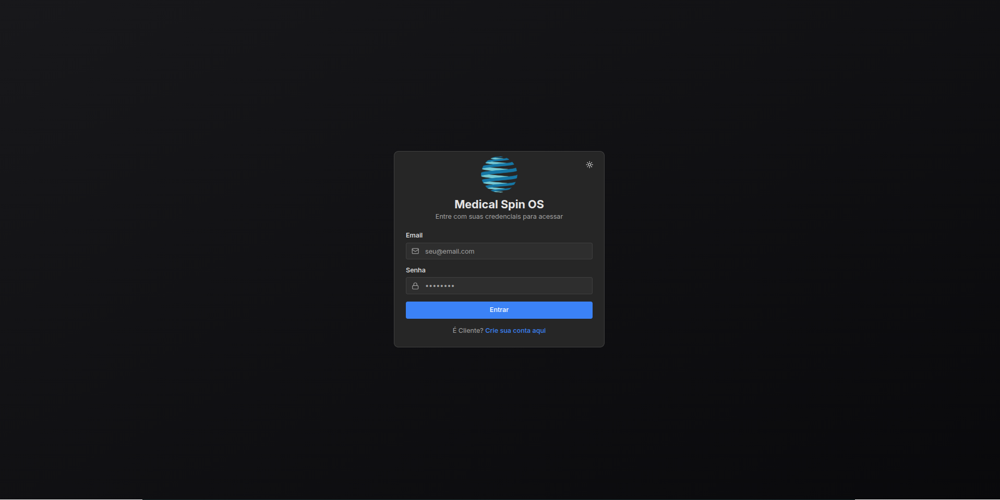

Sistema de Ordens de Serviço - Guia Completo
Versão 1.0 - Abril 2026
O Sistema de Ordens de Serviço foi desenvolvido para otimizar o fluxo de trabalho dos técnicos, desde o recebimento de solicitações até a finalização das ordens de serviço.
Principais funcionalidades:
Acesse o sistema com suas credenciais (e-mail e senha). Usuários novos precisam ser aprovados por um administrador antes de conseguir acessar.

Figura 1 - Tela de Login: Screenshot da página de login do sistema mostrando os campos de e-mail e senha
| Tipo | Permissões |
|---|---|
| Técnico | Criar/editar OS, gerenciar solicitações, visualizar clientes |
| Admin | Todas as permissões + gerenciar usuários e departamentos |
| Cliente | Acesso apenas ao portal do cliente |
O painel principal oferece uma visão geral do sistema com acesso rápido às principais funcionalidades.
Painel Principal do Tecnico
Dashboard completo mostrando cards de estatísticas, ações rápidas e departamentos
Cards de Estatisticas
Detalhe dos quatro cards com números de Solicitações, Rascunhos, Finalizadas e Clientes
Menu de Acoes Rapidas
Seção de ações rápidas com botões para as principais funcionalidades do sistema
O sistema organiza técnicos e clientes por departamentos (ex: Ressonância, Tomografia, Ultrassom). Cada departamento pode ter:
Secao de Departamentos
Cards de departamentos com ícones, cores e contadores de técnicos/clientes
Solicitações são requisições de serviço enviadas pelos clientes através do portal.
Pagina de Solicitacoes
Lista completa de solicitações com filtros, busca e gráficos de estatísticas
Na página de solicitações, você pode:
Graficos de Estatisticas
Gráficos de pizza e barras mostrando distribuição de solicitações por status e período
Ao clicar em uma solicitação, você terá acesso a:
Detalhes da Solicitacao (Visao Tecnico)
Página completa de detalhes mostrando dados do cliente, equipamento, problema e mídias
Botoes de Acao da Solicitacao
Área de ações mostrando botões de alterar status, criar OS e cancelar
Ao criar uma OS a partir de uma solicitação, os dados do cliente e equipamento são preenchidos automaticamente. A solicitação fica vinculada à OS para rastreabilidade.
Uma Ordem de Serviço (OS) pode ser criada de duas formas:
Tela Inicial de Nova OS
Página inicial para criação de nova OS com opções de criar do zero ou a partir de solicitação
A OS é preenchida em etapas sequenciais. Você pode salvar a qualquer momento como rascunho e continuar depois.
Indicador de Etapas
Barra de progresso mostrando as 9 etapas da OS com indicação da etapa atual
O sistema salva automaticamente as alterações ao navegar entre etapas ou ao clicar em "Salvar".
A Ordem de Serviço é dividida em 9 etapas para organização do preenchimento:
Selecione ou cadastre o cliente. Campos principais:
Etapa 1 - Dados da Empresa
Formulário de seleção/cadastro de cliente com campos de dados da empresa
Selecione ou cadastre o equipamento:
Etapa 2 - Equipamento
Selecao de equipamento existente ou cadastro de novo equipamento
Descreva o motivo do serviço:
Etapa 3 - Motivo
Campos de texto para descricao do motivo do servico e eventos relevantes
Registre os detalhes da intervenção:
Etapa 4 - Intervencao
Seleção do tipo de intervenção e campo para descrição dos serviços realizados
Cadastre as peças utilizadas:
Etapa 5 - Pecas
Tabelas de peças removidas e inclusas com formulário para adicionar novas peças
Registre as horas trabalhadas:
O sistema calcula automaticamente o total de horas.
Etapa 6 - Mao de Obra
Lista de registros de horas trabalhadas com total automatico e formulario de adicao
Informe se existem pendências:
Etapa 7 - Pendencias
Campos para informar pendências da empresa e do cliente com opções sim/não
Documente o estado do equipamento:
Etapa 8 - Estado do Equipamento
Campos para descrição do estado inicial e final do equipamento
Complete a OS com as informações finais:
Etapa 9 - Finalização
Formulário final com dados do engenheiro, recebedor e área de upload de fotos
Rascunho OS em andamento, pode ser editada.
Fechada OS preenchida, aguardando finalização. Pode ser reaberta para edição.
Finalizada OS enviada para o sistema. Documento PDF gerado.
Após finalizar a OS, ela é enviada para processamento e geração do PDF. Revise todas as informações antes de finalizar.
A página de histórico exibe todas as Ordens de Serviço finalizadas.
Página de Histórico de OS
Lista de OS finalizadas com busca, filtros e ações de visualização/download
Visualizacao de OS Finalizada
Página de detalhes da OS finalizada com todas as informações e botão de download PDF
Ao enviar por e-mail:
Modal de Envio por E-mail
Formulário de envio de OS por e-mail com seleção de destinatários e personalização
Pagina de Clientes
Lista de clientes cadastrados com busca e opções de gerenciamento
Visualize todos os clientes cadastrados com:
Para cadastrar um novo cliente:
Formulario de Novo Cliente
Página de cadastro de novo cliente com todos os campos de dados da empresa
Na página de edição você pode:
Edicao de Cliente com Equipamentos
Página de edição mostrando dados do cliente e lista de equipamentos cadastrados
Cada cliente pode ter múltiplos equipamentos cadastrados. Ao criar uma OS, você pode selecionar o equipamento da lista do cliente ou cadastrar um novo.
O painel administrativo está disponível apenas para usuários com cargo "admin".
Painel de Administracao
Visão geral do painel admin com abas de usuários e departamentos
Usuários que se registraram e aguardam aprovação:
Usuarios Pendentes
Lista de usuários aguardando aprovação com botões de aprovar e rejeitar
Gerencie todos os usuários do sistema:
Lista de Usuarios
Tabela de usuários cadastrados com opções de edição e exclusão
Organize a equipe por departamentos:
Formulario de Novo Departamento
Modal de criação de departamento com campos de nome, descrição, cor e ícone
Adicione técnicos ao departamento para que eles possam atender os clientes daquele departamento.
Atribuicao de Tecnicos
Interface para adicionar e remover técnicos de um departamento
Associe clientes ao departamento:
Vinculacao de Clientes
Lista de clientes vinculados ao departamento com opção de definir técnico responsável
Sempre descreva os serviços realizados de forma clara e detalhada. Isso facilita o histórico e a comunicação com o cliente.
Cadastre todas as peças utilizadas com número de série quando disponível. Isso ajuda no controle de estoque e garantia.
Tire fotos do equipamento antes e depois da intervenção. Isso documenta o trabalho realizado e serve como referência futura.
Revise todos os campos antes de finalizar a OS. Após finalizada, a OS é enviada para processamento e não pode ser editada.
Use a função de rascunho para salvar OS em andamento. Você pode continuar o preenchimento depois, em qualquer dispositivo.
Mantenha o status das solicitações atualizado. O cliente pode acompanhar o andamento pelo portal e recebe notificações automáticas.